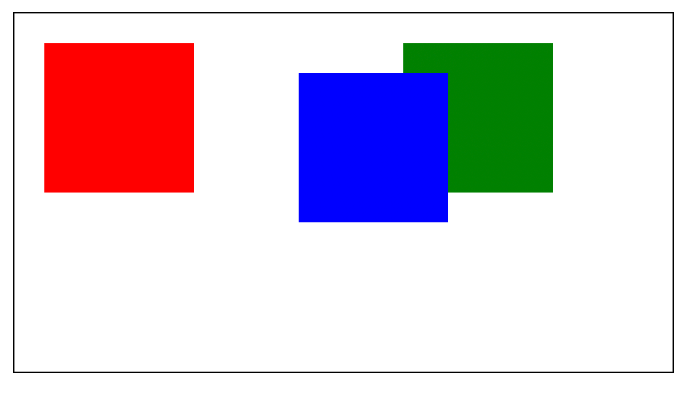

flex-row: Aligns .png) flex items horizontally in a row (default direction). Items are laid out from left to right.
flex items horizontally in a row (default direction). Items are laid out from left to right.
Item 1
Item 2
Item 3
1. Difference Between flex-row and flex-column
flex-row: Aligns flex items horizontally in a row (default direction). Items are laid out from left to right.
flex-column:.png) Aligns flex items vertically in a column. Items are stacked from top to bottom.
Aligns flex items vertically in a column. Items are stacked from top to bottom.
Q 2.Inline, Internal, and External Stylesheets
.png) 2. Inline, Internal, and External Stylesheets
Inline CSS: Applied directly within an HTML element using the style attribute.
fieldset pre code p style="color: red;">Hello World
2. Inline, Internal, and External Stylesheets
Inline CSS: Applied directly within an HTML element using the style attribute.
fieldset pre code p style="color: red;">Hello World
3.Internal CSS: Defined within a style tag inside the head section of an HTML document.
4. External CSS: Written in a separate .css file and linked to the HTML document using the tag
.png) The justify-content property aligns flex items along the main axis (horizontal by default). It defines the distribution of space between and around content items.
Values:
flex-start: Items are aligned at the start of the container.
flex-end: Items are aligned at the end of the container.
center : Items are centered in the container.
space-between : Items are evenly distributed with the first item at the start and the last item at the end.
space-around : Items are evenly distributed with equal space around them.
space-evenly : Items are evenly distributed with equal space between and around them.
The justify-content property aligns flex items along the main axis (horizontal by default). It defines the distribution of space between and around content items.
Values:
flex-start: Items are aligned at the start of the container.
flex-end: Items are aligned at the end of the container.
center : Items are centered in the container.
space-between : Items are evenly distributed with the first item at the start and the last item at the end.
space-around : Items are evenly distributed with equal space around them.
space-evenly : Items are evenly distributed with equal space between and around them.
4.Absolute vs. Relative Positioning
Absolute Positioning (position: absolute): Positions an element relative to its nearest positioned ancestor (non-static). If no positioned ancestor exists, it positions relative to the initial containing block (usually the viewport).
5.What is z-index in CSS?
6. Difference Between Padding and Margin
.png)